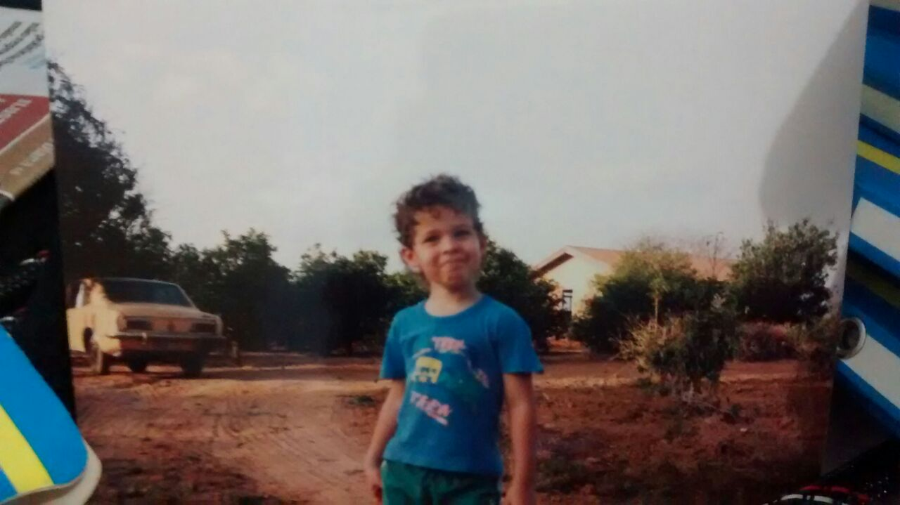

the plan
2022 should be a year in which I complete my pivot from full stack enterprise developer to the information security field. Be it as a bug bounty hunter, be it as pentester, at this point I would even go in as a blue teamer just so I can get my foot off the doorsteps.
My experience as a developer proved useless when trying to break the HR barrier, as expected. And the lack of working experience and certifications does not help. But the knowledge base is building fast and strong. Got the fundamentals down pretty much, and should be able to actually hack real targets this time around.
The first step is to decide on a path. Before the cycle starts (by the time autumn comes in the southern hemisphere) I will pick a cetification or two to go after on the first three months. Certs will always be important keys to break through the HR blockades. But more important than the certification is the dedication I will have to bug hunting every day. I need at least one paid bounty on this restart. Bountys can be a way of freeing myself of the rats race.
"
If you act rightly, you will be accepted; but if not, sin lies in wait at the door: its urge is for you, yet you can rule over it.
Genesis 4:7
"
I don’t want to overwhelm myself and be miserable when unnatainable goals don’t end up being reached.
Continuing my studies on tryhackme (1%), hackthebox and possibly other new platforms.
One paid bug.
One recognized certification I can afford.
And then we’ll see where we go from there.
